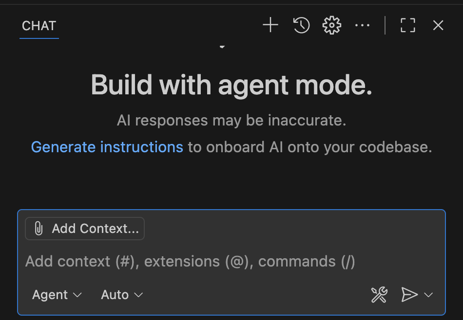
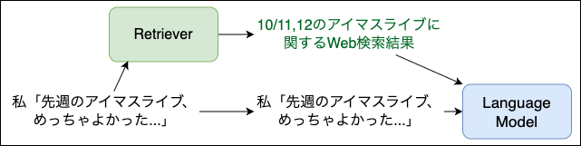

ターミナルからLLMを！ simonw/llm の布教
- Event:
神楽坂第1ターミナル
- Presented:
2025/10/20 nikkie
お前、誰よ？
nikkie（にっきー）・Python使い（ポジションペーパー）
@ftnext 私が欲しい小さなライブラリをおすそ分けでOSS（hayasaka, flake8-kotoha）
機械学習エンジニア。 Speeda AI Agent 開発（We're hiring!）
好きなCLIツールを布教するぜ！
「お勧めコマンドラインツール」を聞きたい人もいる！
ターミナルからLLMを使う という話です
LLM、使っていますか？🙋
ブラウザでChatGPT (GPT-5)

エディタで GitHub Copilot
{kind=link}
私は思った「ターミナルでも LLMを使いたい！」
※今年（2025年）の3月終わり頃の話です
推しの simonw/llm
Python🐍製CLIツール
Simon Willisonさん
Django （PythonのWebアプリフレームワーク）のCo-creator
https://simonwillison.net/ でここ数年 LLMについて精力的に発信 （自転車に乗るペリカン）
（勝手に） 我がヨーダ
simonw/llm
CLI utility and Python library for interacting with Large Language Models from organizations like OpenAI, Anthropic and Gemini plus (略)
simonw/llm動作例
$ uvx llm models
Default: gpt-4o-mini$ # OPENAI_API_KEY
$ uvx llm "Ten fun names for a pet pelican"補足：Python環境は uv だけあればいい
Astral社のuv 登場でPython環境が 簡単 に
（
uvの他に） uvxコマンド も生えるuvx llmは最新のllmを一時的な 仮想環境 にインストールして実行
プラグインでサポートするモデルを拡張
$ uvx --with llm-gemini llm models
GeminiPro: gemini/gemini-2.5-flash (aliases: gemini-2.5-flash)
GeminiPro: gemini/gemini-2.5-pro (aliases: gemini-2.5-pro)$ # LLM_GEMINI_KEY
$ uvx --with llm-gemini \
llm -m gemini-2.5-flash 'Tell me fun facts about Mountain View'推し1️⃣ Unixコマンドと パイプ で繋げられる！ [1]
$ cat index.ts | uvx --with llm-gemini \
llm -m gemini-2.0-flash 'TypeScriptの内容を解説してください。'% curl <URL> | uvx markitdown \
| uvx --with llm-gemini \
llm -m gemini-2.0-flash 'マークダウンはそのままに、日本語に翻訳してください' > translated.md推し2️⃣ 自動ロギング [2]
$ uvx llm logs -n1 --json推し3️⃣ プラグインで拡張
$ uvx --with llm-devin llm models
DevinModel: devin
DeepWikiModel: deepwikiコーディングエージェント CLI の台頭
etc. etc.
「simonw/llmの代わりにClaude Codeでよくない？」
🥹 🥹 🥹
Unixコマンドとパイプで繋げられる🙆♂️
$ cat logs.txt | claude -p "explain"$ git status | \
claude -p "what are my changes?" --output-format=json | \
jq '.result'自動ロギング🙆♂️ [4]
- 直前の会話の続きから再開:
claude --resume
- これまでの会話履歴から選んで再開:
claude --continue
プラグインで 拡張 🤔
llm-devin 爆誕と等価ではないかもしれないですが
Claude Code Plugins
simonw/llmだけにできることは...？
実際私もClaude Code -> Codex CLIと変遷しています（テノヒラクルクルー👋）
💡simonw/llmは RAG ができます！
RAG: Retrieval-Augmented Generation
LLMはある時点までの知識しかない（カットオフ）
例えば、最新の話題（先週のアイドルマスターのライブ）には正確に回答できない
解決するために、RAG（検索拡張生成）
LLMのコンテキストに外部情報を追加

論文「In-Context Retrieval-Augmented Language Models」Figure 2
LLMのコンテキストに外部情報を追加
LLMはライブをもちろん知らないが、質問と合わせて例えば Web検索結果も与えられれば 回答できる [5]
simonw/llmでRAG
劇場版アイドルマスター についてLLMとおしゃべりします
「もう時間がないんですか」
劇中に「もう時間がないんです！」が登場するので、それを踏まえて回答してほしい
simonw/llmはembeddingを計算できる！
テキストを意味を保った ベクトル （embedding）に変換
似た意味のテキストはembeddingのコサイン類似度が1に近い
embeddingを保存
$ uvx llm embed-multi oai-movimas movimas.jsonl \
-m text-embedding-3-small --format nl --store
$ uvx llm collections list
oai-movimas: text-embedding-3-small
1207 embeddings劇場版のセリフ を公開している方がいます
コサイン類似度で検索（＝意味検索） [6]
$ # OPENAI_API_KEY
$ uvx llm similar oai-movimas -c 'もう時間がないんですか' -n 4 | jq -c '.'
{"id":"1045","score":0.4650222891995457,"content":"志保「もう時間が無いんです！ 今進める人間だけでも進まないと、みんなダメになりますよ！？」","metadata":null}
{"id":"954","score":0.42914991489215454,"content":"P「今からやれば十分間に合うわけだし、そう重く受け止めなくてもいいんじゃないか？」","metadata":null}
{"id":"1072","score":0.418144028938804,"content":"P「だから、もう少しみんなに負担がない時期とか、やりようはあるとおも…」","metadata":null}
{"id":"1192","score":0.41312547632270286,"content":"千早「まだ…見つかってないわ」","metadata":null}「もう時間がないんですか」💯
$ echo "Use the following pieces of context to answer the user's question.
If you don't know the answer, just say that you don't know, don't try to make up an answer.
----------------
$(uvx llm similar oai-movimas -c 'もう時間がないんですか' -n 4 | jq -r '.content')
----------------
Question: もう時間がないんですか" | uvx llm -
はい、志保が「もう時間が無いんです！」と言っていますので、時間がない状況であることは確かです。まとめ🌯 ターミナルからLLMを！ simonw/llm の布教
パイプで繋げる！ 自動ロギング！ プラグインで拡張！
しかし、昨今Claude CodeなどのCLIツールでもこれら機能は提供される
ナイーブなRAGができる という独自価値を今回明らかにした（llm embed-multi・llm similar）
ご清聴ありがとうございました
Simon Willisonさん、素晴らしいツールをありがとう🫶